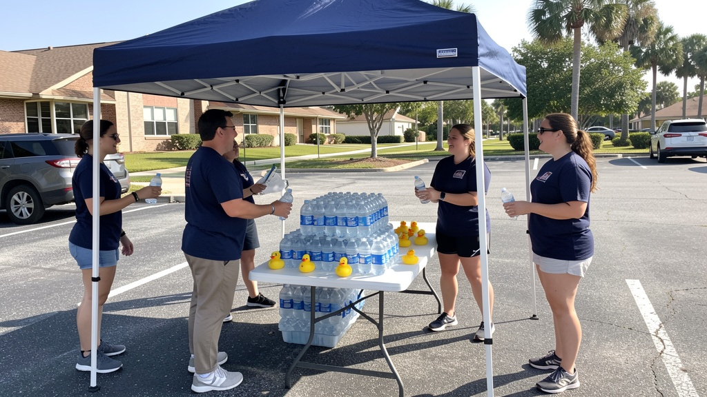

Churches and community organizations are called to change lives — not to spend their days chasing dollars. Project 22 puts boots on the ground, builds the fundraiser, and hands the proceeds to the missions doing the work.
Every ministry leader knows the tension: the mission is urgent, but the money is slow. Volunteers are stretched thin. Grant cycles crawl. Bake sales barely cover the flour.
Project 22 exists to carry that weight. We design and run high-velocity community fundraisers — game-day water stations, charity duck drives, seed sponsorships, and a digital giving engine — then split the proceeds with the church and community organizations we serve.

Two ice-cold bottles of donated water plus three custom charity ducks, offered at four high-traffic stations on partner church properties near the stadium — every bundle enters fans in a rivalry raffle.
Partner churches fold the bundle straight into their game-day parking ticket. Hundreds of bundles sell automatically before kickoff — and host churches are honored for opening their land.
Every duck carries a QR code linking to our partners' stories and one simple ask: $1 for the whole year. Tens of thousands of ducks become tiny billboards for the mission.
A sanctuary of safety and support for women and children escaping domestic violence and homelessness — sheltering families in South Hillsborough for over 40 years.
Learn more →A non-denominational church family chosen and appointed to bear fruit — serving its community through worship, student ministry, home groups, and outreach events.
Learn more →Bikers, believers, and bridge-builders walking the Freedom Road with men coming out of incarceration, addiction, and homelessness — with counseling, sober living, and hope.
Learn more →Whether you lead a ministry that needs funding, own a business that could seed a fundraiser, or just want to volunteer on game day — there's a place for you at the station.